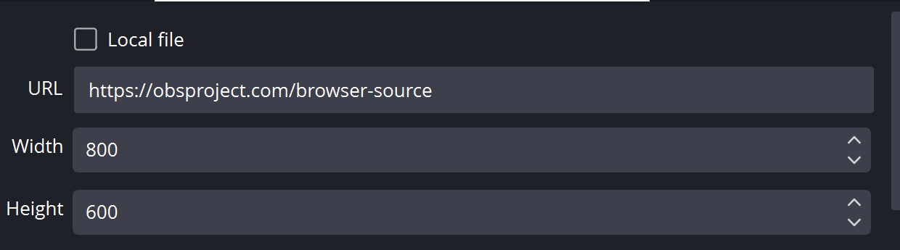
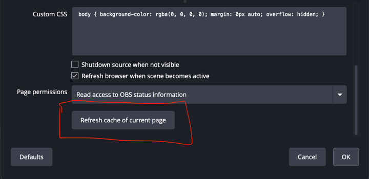

Start With The Dock
The dock is the fastest test. If the dock is empty, do not debug OBS yet. Fix the platform source first.

Replace The Saved OBS URL And Refresh Its Cache
Do these in this order. Refreshing the cache alone does not add a changed session, password, or server-routing option to an old URL.
- In Social Stream Ninja, copy a freshly generated link for the exact Dock or overlay you use. Copy the whole link instead of editing its parameters by hand.
- In OBS, find the Social Stream source in Sources, right-click it, and choose Properties.
- Make sure Local file is not selected. Select everything in URL, then paste the new link over the old one.

- Scroll to the bottom of the Properties window and click Refresh cache of current page.
- Click OK, then send one fake test message from Social Stream Ninja.

If it is still stale: close Properties, open it again, and repeat the test. Removing and recreating the Browser Source with the fresh link is the last resort.
Reopen A Dock Link
Close the old Dock page or window, then click the newly generated Dock link in Social Stream Ninja. If it is saved as an OBS Custom Browser Dock, open Docks → Custom Browser Docks, replace its URL, apply the change, and reopen that dock.
Decision Tree
| Test | Meaning | Next Step |
|---|---|---|
| Dock is empty | Source/platform capture is not working yet. | Check login, live page, popout/source page, app mode, or platform guide. |
| Dock works, browser overlay works | OBS browser source is the likely issue. | Refresh OBS source, check URL, dimensions, visibility, cache, and custom CSS. |
| Dock works, browser overlay blank | Wrong overlay page, wrong session, or no matching payload. | Use the same session and pick a page that matches the expected output. |
| Image works, TTS silent | Audio routing issue. | Check provider vs system TTS and OBS audio capture. |
Check The Overlay URL
Use the exact same session ID everywhere. A one-character difference creates a separate room.
https://socialstream.ninja/dock.html?session=YOUR_SESSION
https://socialstream.ninja/featured.html?session=YOUR_SESSION

If TTS Is Silent In OBS
Plain system TTS is the common trap. It may speak through your speakers while OBS Browser Source hears nothing.

Detailed help: TTS Setup Guide.
Common Fixes
- Replace the saved URL, then refresh the Browser Source cache.
- Make the source visible and check that width/height are not tiny.
- Temporarily remove custom OBS CSS to rule out hidden text or opacity.
- Open the same OBS URL in a normal browser to separate OBS issues from Social Stream Ninja issues.
If support has confirmed a Windows privilege mismatch, follow Run OBS and Social Stream as Administrator. Administrator mode is not a normal fix for a blank Dock.
Still stuck? Export your Social Stream Ninja settings and OBS scene collection for support.